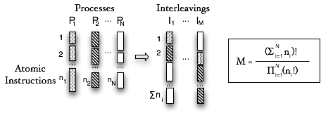

What can JPF do that cannot be achieved with normal testing? JPF can simulate non-determinism. Certain aspects like scheduling sequences cannot be controlled by a test driver, and require help from the execution environment (VM). Other sources of non-determinism like random input data are supported with special APIs which can significantly ease the creation of test drivers. Simulating non-determinism requires more than just the systematic generation of all non-deterministic choices. Two capabilities come into play to make this work: backtracking and state matching.
(1) Backtracking means that JPF can restore previous execution states, to see if there are unexplored choices left. For instance, if JPF reaches a program end state, it can walk backwards to find different possible scheduling sequences that have not been executed yet. While this theoretically can be achieved by re-executing the program from the beginning, backtracking is a much more efficient mechanism if state storage is optimized
(2) State Matching is another key mechanism to avoid unnecessary work. The execution state of a program mainly consists of heap and thread-stack snapshots. While JPF executes, it checks every new state if it already has seen an equal one, in which case there is no use to continue along the current execution path, and JPF can backtrack to the nearest non-explored non-deterministic choice
In theory, explicit state model checking is a rigorous method - all choices are explored, if there is any defect, it will be found. Unfortunately, software model checking can only provide this rigor for reasonably small programs (usually <10,000 loc), since the number of states rapidly exceeds computational limits for complex programs. This problem is known as state space explosion, and can be easily illustrated by the number of possible scheduling sequences for a given number of processes consisting of atomic sections.

Figure 1: state space explosion due to threat interleavings
JPF addresses this scalability problem in three ways: (1) configurable search strategies, (2) reducing the number of states, and (3) reducing state storage costs.
(1) Configurable search strategies try to solve the problem that the whole state space cannot be searched by directing the search so that defects are found quicker, i.e. with less computational resources. This basically means to use the model checker not as a 'proof-', but as a 'debugging-' tool, which is mostly achieved by using heuristics to order and filter the set of potential follow-on states according to some property related relevance. Computation of heuristic values is delegated to a user configured class, i.e. is not hardcoded in the JPF core
(2) Reducing the number of states that have to be stored is the preferred way to improve scalability, and is supported by a number of mechanisms
(3) Reducing state storage costs refers mainly to implementation features of the JPF core. While not being the primary measure to deal with state space explosion, efficient state storage is mandatory for a software model checker. Since state transitions usually result in a small amount of changes (e.g. a single stack frame), JPF uses a technique called state collapsing to bring down the per-state memory requirements by storing indexes into state-component specific pools (hash tables) instead of directly storing changed values
To compare states, JPF extends the state collapsing mechanism by hashing the resulting pool-index vectors, using a single, consecutive number as a unique state-id, thus reducing state equality checks to single integer comparisons. The hash mechanism (state set implementation instead of hash table) is configurable, using MD5 as default. The 128 bit hash values make it much more likely to run out of state memory before ever encountering a hash collision.